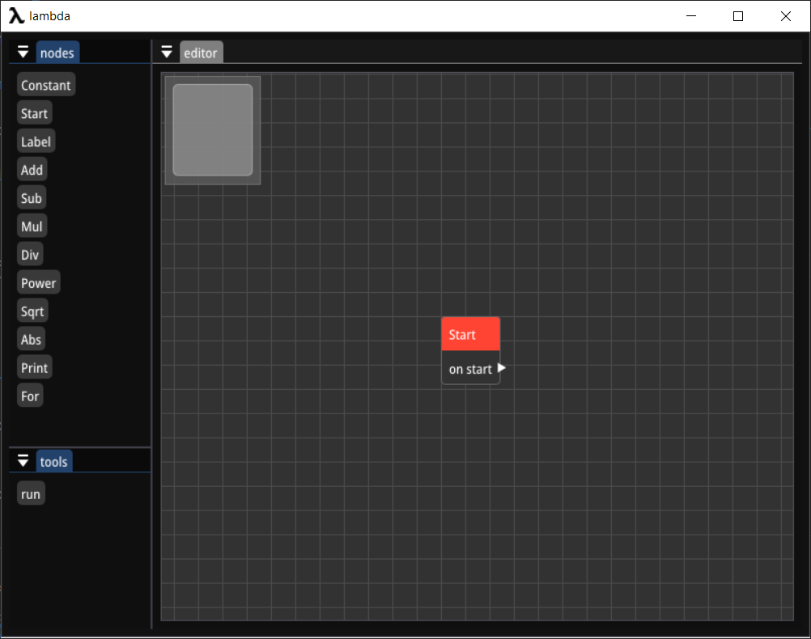
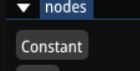
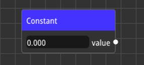
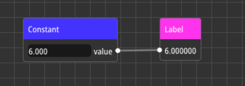
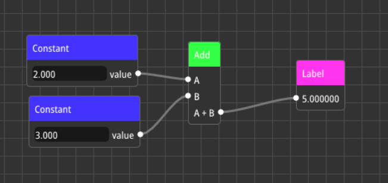

Getting started
in this page you will learn how to use lambda!
Installation
first go to https://github.com/arshavirmirzakhani/lambda and download latest version lambda from releases tab
First look
when you open lambda you should see somthing like this :

- on left you see the nodes tab , you can create nodes by clicking the buttons
- on right you see the editor , this is where you use nodes
Basic concept
lets create our first flow that gets two number as input and adds them then shows the result to do that first click on "Constant" button to create a Constant node

now you should see the constant node on editor

in lambda each node represent an operation. nodes can be connected to each other from ports using links , for example you can connect a constant node to an label node like the image below :

when an node output port connect to another node input port , the value of input will be set to value of the output.
Make your first basic flow
now lets make a flow that adds two number and show the result
here are the steps with explanation :
create two constant node
constant node are used to output numerical values
create an add node
this node is used two add two values
connect one constant node to first pin and connect another one to second pin
now we created a flow that adds two number now lets output the value
create an label node and connect it to output of the add node
label node id used to see output of nodes
now you should see somthing like this :

shortcuts
here some short cuts in lambda :
C copy nodes
V paste nodes
Del delete nodes/links